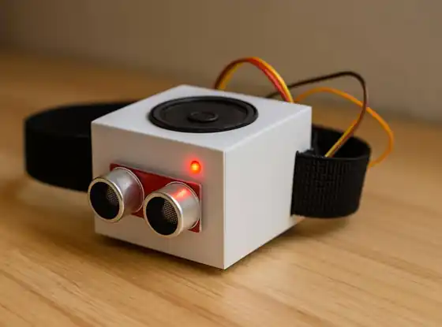
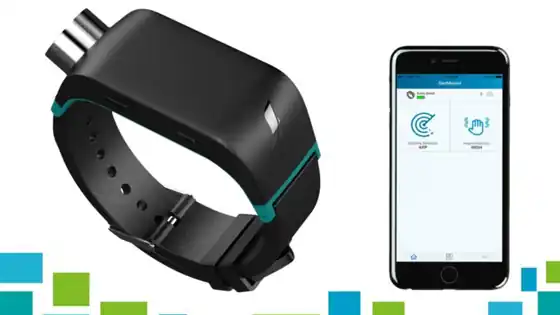

S
PANORAMICA / 01
Benvenuto in SENSE.
Un'anteprima dell'esperienza digitale che affiancherà il dispositivo.
i
Stai esplorando una scena 3D simulata. Nessun sensore sta acquisendo dati: geometria e ostacoli non rappresentano un luogo reale.
SENSE / HARDWARE STORY
IMMAGINI ORIGINALIDal prototipo al bracciale.
Le immagini originali del progetto: prima unità sperimentale e direzione del prodotto finale.

FASE 01 · PROTOTIPO REALE MOSTRATO
Unità sperimentale da banco
Il modulo con due trasduttori ultrasonici e indicatore luminoso, usato come riferimento per le prime prove di rilevamento.

FASE 02 · CONCEPT DEL PRODOTTO FINALE
Bracciale SENSE
La direzione estetica del dispositivo indossabile, accompagnato dalla companion app. È un concept e non un prodotto fisico già realizzato.
SPATIAL OVERVIEW
SIMULATAMappa di esempio
TRASCINA PER RUOTARE · ROTELLA PER ZOOM
SCENA 3D SIMULATA
Superficie di esempio Ingombro simulato Non osservato
Schema illustrativo senza valore operativo o metrico.
SYSTEM OVERVIEW
Stato della demo
Acquisizione sensoriDisattivata
Elaborazione spazialeSimulata
Feedback apticoAnteprima
Sincronizzazione cloudNon attiva
SENSE / SPATIAL EXPERIENCE
Mappa spaziale
Visualizza l'ambiente, esplora la scena tridimensionale e consulta le informazioni disponibili.
Modello ambientale illustrativo. Il dispositivo non è collegato: oggetti e geometrie mostrati qui non sono rilevamenti reali e non vanno usati per orientarsi.
AMBIENTE / RICOSTRUZIONE TRIDIMENSIONALE
MODELLO NON CALIBRATOStanza di riferimento
TRASCINA PER RUOTARE · PINCH PER ZOOM
SCENA ILLUSTRATIVA · NON MISURATA
HARDWARE
Stato dispositivo
Non connessoIl prototipo non invia ancora dati all'app.
PERSONALIZZAZIONE
Preferenze feedback
Voce
Tattile
Visivo
Preferenze locali: non attivano hardware.
ATTIVITÀ
Eventi recenti
✓
Nessun evento registratoLa cronologia si popolerà quando saranno disponibili dati reali dal dispositivo.
PREFERENCES / 03
Preferenze feedback.
Controlli dimostrativi per esplorare una possibile esperienza di configurazione.
i
Le preferenze qui sotto cambiano solo questa schermata. Non controllano un dispositivo e non attivano vibrazioni o audio reali.
OUTPUT CHANNELS
Canali informativi
Feedback apticoAnteprima visiva dei segnali
Indicazioni vocaliPreferenza illustrativa, audio non attivo
Valore di esempio, non applicato a hardware
Anteprima prontaPremi il pulsante per visualizzare un esempio
HARDWARE / 04
Dispositivo.
Stato del collegamento e informazioni sul concept hardware.
◎
CONNESSIONE
Nessun dispositivo collegato
La funzione di connessione hardware non è implementata in questa demo. SENSE P1 è ancora in fase di progettazione.
OfflineSENSE / HARDWARE
Il dispositivo, nelle sue fasi.
PROTOTIPO
Unità sperimentale
Due sensori ultrasonici e indicatore luminoso.
CONCEPT FINALE
Bracciale indossabile
Direzione del prodotto e app complementare.
Componenti candidati
Visione stereo, sensore ToF, ultrasuoni, unità di elaborazione e feedback aptico/audio sono ipotesi tecniche da verificare.
Integrazione da validare
La connessione sarà progettata solo dopo aver definito hardware, protocolli, gestione degli errori e requisiti di sicurezza.
CONTROL / 05
Privacy e controllo.
Una dimostrazione delle scelte che guideranno la piattaforma.
◇
QUESTA DEMO
Demo locale, con assistente AI separato.
Questa web app non usa fotocamera, microfono o sensori e non si collega a un dispositivo reale. Le preferenze della demo restano nel browser. Se usi l’assistente AI, il testo della domanda e una parte della conversazione vengono inviati al server del progetto e al servizio AI di OpenAI. Non inserire dati personali, sanitari o riservati. Consulta la pagina Privacy per i dettagli.
Un prodotto reale dovrà trattare solo i dati necessari alle funzioni effettivamente offerte.
Stato dei sensori, qualità dei dati e limiti della mappa dovranno essere comprensibili.
Eventuali mappe o informazioni salvate dovranno essere protette e gestibili dall'utente.